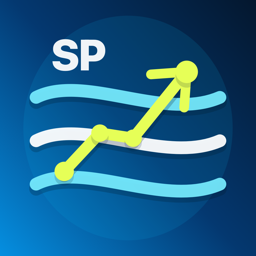
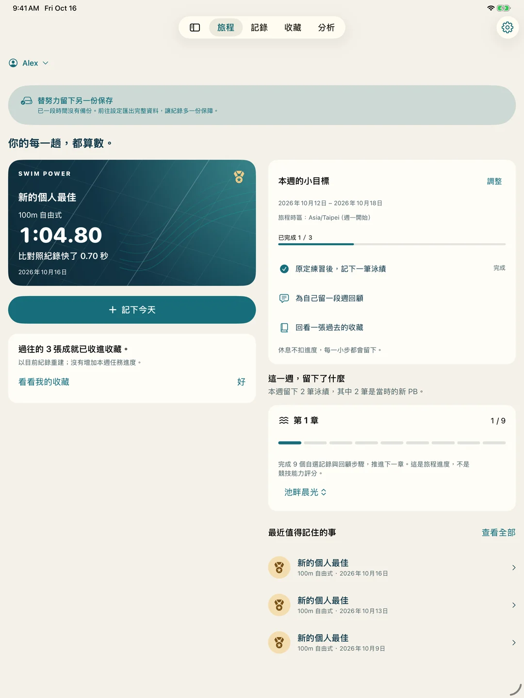
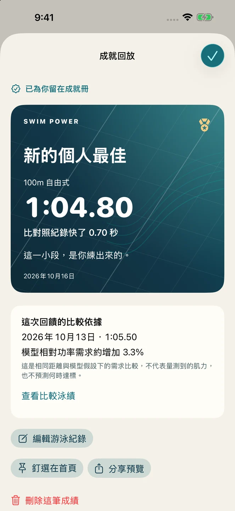
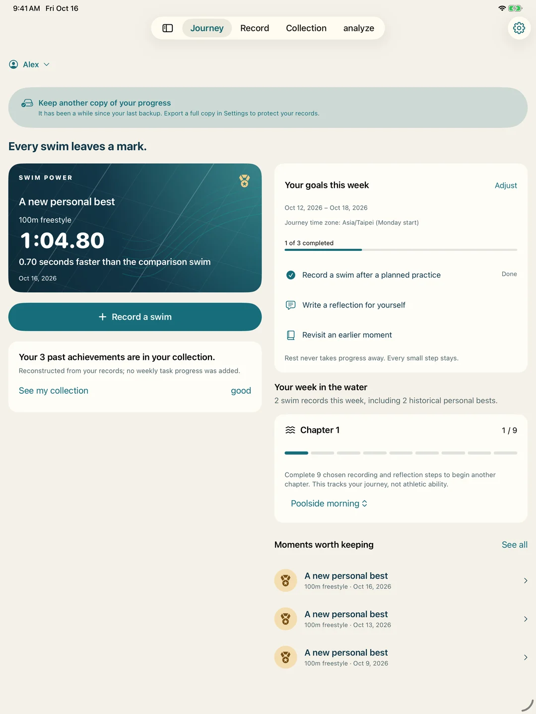
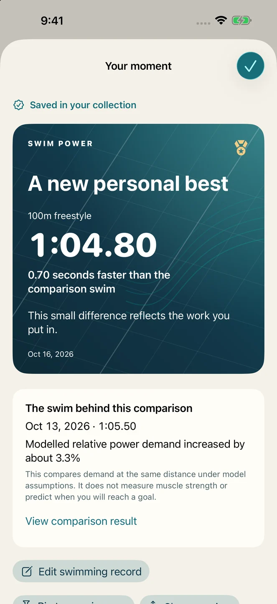

1.1 新版上架 · iPhone / iPadSwim Power
把每一趟游泳，留在自己的成長旅程裡。
記下泳式、距離與時間，用每週目標、回顧與成就卡片，看見持續練習留下的成果。Swim Power 1.1 重新整理旅程、紀錄、收藏與分析介面，讓泳者、家長與教練更容易一起回看進步。
- 可用裝置
- iPhone / iPad
- 下載方式
- 付費下載




從本週的小目標，累積自己的旅程
新版旅程以泳池插畫與成就卡片呈現訓練成果。記下一筆泳績、留下本週回顧，或回看過去的收藏，逐步累積旅程章節。個人最佳值得留念，每一次有意識的記錄與回顧也同樣值得肯定；章節進度代表旅程累積，不是競技能力評分。
把值得記住的進步，收進成就卡片
在成就回放中，查看這次成績與對照紀錄差了多少、比較依據來自哪一趟泳績，再把想留下的時刻收進收藏或釘選在首頁。分享前可先預覽，選擇要顯示的個人資訊。
紀錄更容易整理，也能找回誤刪的內容
建立選手檔案、主項與目標時間，記錄泳式、距離、時間、划手數、主觀用力程度與分段，也能保存身體快照及乾地力量測試。1.1 提供清楚的編輯與刪除入口、全部歷史紀錄，以及找回已刪除紀錄或先前版本的紀錄復原功能。
理解每一秒的重量
Swim Power 用速度、阻力需求、相對功率需求與 Swim Power Index，協助觀察個人最佳、目標時間、下一秒的進步與訓練趨勢。比較會考慮泳式、距離與紀錄情境，清楚標示資料來源，資料不足時也會說明限制。
這些數字是依模型假設計算的相對估算，不是直接測得的肌力或推進力，也不預測何時一定達標。App 用於訓練筆記與趨勢參考，不取代醫療、復健或正式運動科學評測。
隨螢幕空間調整，輸入不中斷
iPhone 與 iPad 版面支援大字體及橫向顯示。1.1 另優化 iPhone Duo 的外螢幕、展開與半摺疊配置，切換時保留正在輸入的內容。
資料留在裝置，分享由你決定
- 訓練資料儲存在本機，不需要帳號。
- 經你授權後，先預覽再手動匯入 Apple Health 的游泳訓練與身體資料。
- 匯出備份、CSV 或教練摘要，方便保存或與教練討論。
- 分享成就前選擇要顯示的個人資訊；匯出的檔案由你選擇的目的地處理。
- 提醒使用本機通知，經你允許才會啟用。
Swim Power
Give every swim a place in your training journey.
Log your stroke, distance, and time, then revisit progress through weekly goals, reflections, and achievement cards. Swim Power 1.1 redesigns Journey, Record, Collection, and Analysis to help swimmers, parents, and coaches see the effort behind progress.
- Devices
- iPhone / iPad
- Download
- Paid download




Build your journey through small weekly goals
The redesigned Journey brings pool-inspired artwork and achievement cards to your training history. Record a swim, write a weekly reflection, or revisit an earlier moment to move through journey chapters. Personal bests and thoughtful recording habits both deserve recognition. Chapter progress tracks your journey, not athletic ability.
Keep the moments worth remembering
Revisit an achievement to see how your time changed and which swim supports the comparison. Keep the moment in your collection or pin it to the home screen. Before sharing, preview the card and choose which personal details to include.
Organise records and recover earlier entries
Create athlete profiles, main events, and target times. Log stroke, distance, time, stroke count, perceived effort, and splits, alongside body measurements and dryland strength tests. Version 1.1 adds clear Edit and Delete actions, access to all historical records, and recovery for deleted records or earlier versions.
Understand the weight of a second
Velocity, drag demand, relative power demand, and Swim Power Index help you explore personal bests, targets, the next second, and training trends. Comparisons account for stroke, distance, and record context, with clear source labels and limitations when evidence is incomplete.
These are relative estimates based on model assumptions, not direct measurements of muscle strength or propulsion, and they do not predict when you will reach a goal. Swim Power is a training notebook and trend reference, not a medical, rehabilitation, or formal sports-science assessment tool.
Use the space you have, without losing your draft
Layouts adapt to iPhone and iPad, including larger text and landscape views. Version 1.1 also improves iPhone Duo layouts when closed, expanded, or partially folded, preserving what you are entering as you switch.
Keep control of your data and sharing
- Training data stays on your device. No account is required.
- After granting permission, preview and manually import swimming workouts and body data from Apple Health.
- Export backups, CSV files, or coach summaries to keep a copy or discuss training.
- Choose the personal details shown in shared achievements. Exported files are handled by the destination you select.
- Optional reminders use local notifications after your permission.